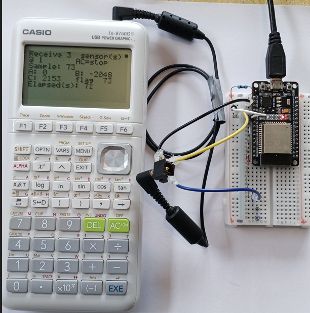
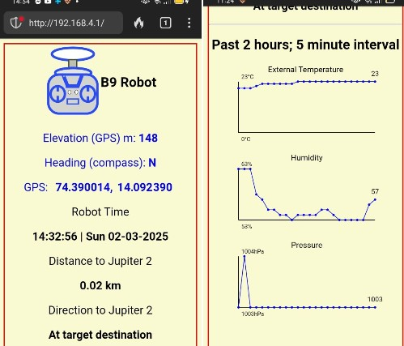

ESP32
Logging and a live web page at the same time
← Casio calculator data logger – project overview
A big step up in this family of Casio FX-9750 data loggers. With an ESP32 you can have GPS location and timestamped logging, long range ESP-NOW for wireless sensors, and VOICE CONTROL!
Borrowing from my B9 robot research, the ESP32 is the most capable board in the set of microcontrollers we have seen so far: two cores, plenty of memory, WiFi, and enough ADC channels to run several sensors while serving a web page. It is the one to reach for when the project has outgrown three readings and a cable.
Even an old FX-9750G Plus can have a webserver to smart devices, ESP-NOW long range radio, at relatively low cost.
The forgotten feature in the 2.5 mm port of a Casio FX-9750 and FX-9860 is now available on my GitHub, open-source and free. It takes the burden off the teacher, because the learners become the experts - constructing, coding and repairing their own smart data logger that also acts as a remote control, a PIN pad, and automation control interface.
This is an extension of my 2008 research, which carried classroom validation and student feedback, now with a modern facelift using all modern microcontrollers, including the ESP32. Learners can record heart rate, temperature, sound level, and other readings using sensors they build themselves, for cents or a few dollars.
The calculator needs no modification or firmware change. It does not need to know what is on the other end of the cross-over cable.
Before you wire anything
Check the wiring of every conductor with a multimeter first. The wire colours inside a bought SB-62 cable may not match the colours in any diagram, including this one. Check the tip, ring and sleeve against your own cable before connecting a calculator. The ESP32 is a 3.3 V part and is not 5 V tolerant.
What you need
- An ESP32 development board.
- A calculator: FX-9750G Plus or FX-9750GIII.
- The four interface components below.
- The Arduino IDE with ESP32 board support.
The interface circuit
Four components, and the same circuit on every platform. It serves both calculator generations and both board supply voltages.

- 1N4148 in the blue wire, band toward the board. This makes the board's output open-drain: it can only pull the line low, and the calculator raises it with its own internal pull-up. That is what lets one cable serve a 5 V board and a 3.3 V one.
- 4.7 kΩ pull-up from the yellow wire to the board's own supply. Both calculators power their port down between transfers, so a board that is listening reads a permanent break without it.
- 10 kΩ in series with the receive pin, and a 1N5711 Schottky from that pin to the board's supply. These matter only when a 3.3 V board meets an FX-9750G Plus, whose transmit line sits at 4.75 V. On every other combination the Schottky is idle and costs nothing.
The 10 kΩ is in series only. Nothing connects the receive pin to ground. Add a resistor there and it becomes a divider, which drops an FX-9750GIII's 2.75 V mark to about 1.8 V and stops working.
Pins
| Signal | Pin | Note |
|---|---|---|
| From Casio TX – yellow, tip | GPIO16 | with the pull-up to 3.3 V |
| To Casio RX – blue, ring, via the 1N4148 | GPIO17 | band toward the board |
| Ground – black, sleeve | GND | connect this one first |
| DS18B20 thermometer | GPIO4 | 4.7 kΩ pull-up to 3.3 V |
| Sensor 2, analogue | GPIO35 | ADC1 |
| Sensor 3, analogue | GPIO36 | ADC1 |
| Status LED | GPIO2 | on-board on most modules |
Use ADC1 pins only. The ESP32's ADC2 is unavailable while WiFi is running. Analogue reads on an ADC2 pin will fail the moment the radio comes up, and the symptom – readings that work on the bench and stop when the web server starts – sends you hunting in the wrong place.
The code
Casio-ESP32-NSN-webserver.ino– logging plus a live web page.Casio-ESP32-NSN-remote-control.ino– the calculator drives the board rather than reading from it.
CasioSerial.begin(9600, SERIAL_8N2, CASIO_RX_PIN, CASIO_TX_PIN);
#define TURNAROUND_MS 5Three requirements apply to every platform. They are why this works at all, and each of them was found by a link that would not run without it.
- Idle between bytes. An FX-9750G Plus needs roughly one bit period – about 104 µs at 9600 baud – of idle line between one byte and the next. A second stop bit supplies it; so does a deliberate delay. An FX-9750GIII does not care.
- A turnaround delay. About 5 ms before every transmission, so the calculator can switch its port from sending to listening. Without it the calculator answers
0x22and never sends its request packet. - Build the packet, then send it. Nothing computed part-way through a transmission – a checksum between the last two bytes will insert a pause a G Plus refuses.
What goes wrong
This build depends on SERIAL_8N2
Change it to SERIAL_8N1 and an FX-9750GIII carries on logging while an FX-9750G Plus stops with a Com ERROR. The hardware UART sends a buffered packet with no gaps at all, and the G Plus needs about 104 µs of idle between bytes. The second stop bit is the whole of the fix, and it is free.
A web page and an FX-9750G Plus want a longer interval
A GIII will let you refresh the page on a phone repeatedly without disturbing the logging interval. A G Plus interprets BASIC and redraws its screen more slowly, and at a short interval the board never gets a spare moment to answer the browser. Lengthen the sampling interval and the page becomes reachable. Nothing is broken; the board simply has more to do than time to do it in.
The minimum honest interval on a G Plus is 2 seconds
Ask a G Plus for a 1 s interval and it collects every sample, but each one lands on the following send time, so the true spacing is 2 s – while the calculator writes its elapsed-time column as though it were 1 s. The data looks perfect and the time axis is wrong by a factor of two, with nothing on the calculator able to detect it. Set the floor to 2 s for a G Plus. A GIII will honour 1 s.
Other things worth knowing
- The board can log alone and hand the record over afterwards.
- A G Plus stores 255 samples per list. Longer runs continue into another list.
Code, manual and the other platforms
- Repository, all platforms: github.com/MikeFentonNZ/Casio-calculator-datalogger-picaxe-esp-microbit-arduino
- Technical manual – wiring, the full
Receive(sequence, every packet and checksum: https://doi.org/10.5281/zenodo.22095227 - Project overview: Casio calculator data logger – the $10 upgrade
WARNING - TAKE CARE!
NEVER connect mains electricity (240 V / 110 V) to the calculator, to the microcontroller, or to any sensor wiring.
NEVER use mains-connected equipment near water.
Keep every sensor signal within 0 V to 3.3 V. The ESP32 and ESP8266 are not 5 V tolerant. A bare ESP8266 A0 pin reads 0 to 1.0 V only; 3.3 V will destroy it. However, popular development boards like NodeMCU and Wemos D1 Mini include an onboard resistor voltage divider, which safely extends their external board tolerance to 0 to 3.2V–3.3V
Special Warning: DO NOT let students test boiling water.
There is no need to calibrate temperature sensors using boiling water. Where in the real world would a student expect to record that temperature? If you are investigating cooling curves, YOU should safely get sensor readings at 100 °C and PROVIDE THIS to learners.
READ THE DISCLAIMER in the Technical manual - No responsibility is taken for how you use this information! This is a research project provided open-source to educators.
Use it
Always remind learners that scientists and engineers work carefully and safely, no matter what they see in movies or TV.
Sensor Lab: With a breakout adapter, try inventing your own ultra-low-cost sensors. Anything that changes its electrical resistance due to one environmental factor is a good start. You may need a 10k pull-up resistor - learn about these and what they do. Alternatively, try low cost NTC temperature thermistors, light dependent resistors (LDR). Advanced learners can try DS18B20 temperature sensors, HC-SR04 range-finders, and DHT-11 modules. Build a colorimeter to detect light changes with a LDR and an LED as a light source for chemistry investigations. You do not need a LED to log the change in glow stick brightness over time - does temperature affect this?



NOTE: Use a current limiting resistor on the LED!
Medical Lab: Connect a low-cost heart beat sensor, and code the ESP32 to calculate heart rate. Send this to the Casio FX-9750 to see trends before and after exercise, or see if you can make a lie detector!

Connect to smart devices to show live graphs and GPS location, date and time stamps: Attach a low-cost GPS unit and you have a survey field logger! The robot B9 (Lost in Space) is a very large container for the circuit, but you can use a regular jiffy or project box!

The ultimate “Build it, Test it, Use it” project. The B9 robot from Lost in Space has storage built into his legs for digital multimeters, sensors, and Casio calculator data loggers. Go explore this planet - no need for a space suit!
Over distance. ESP-NOW has been proven for long range wireless remote control or wireless sensors.

Mars surface surveyor: Attach a low-cost ultrasonic rangefinder module (Aliexpress) and map a simulated Martian surface from the air (see the 2008 E-Learning report https://doi.org/10.5281/zenodo.19302276).


A renewed justification in a post AI-era.
When technology cost and availability is no longer a consideration, the use of simulated data for STEM learning is a decision that now requires justification, rather than being the default.
The original case for this work was equity: timed data logging for a few dollars instead of hundreds. There is now a second reason it matters. As generative AI is trained on a scientific literature increasingly polluted by fabricated paper mill studies (Richardson and Amaral, 2025, PNAS), simulated datasets can no longer be assumed to reflect physical reality. Subverting the Casio serial protocol so learners can gather their own first-hand measurements gives them data whose provenance is transparent and which can still surprise. The exploit is no longer only about cost; it is about preserving access to real, trustworthy observation.
Other platform build guides: PICAXE · BBC micro:bit · ESP8266 · Arduino Uno
B9 robot mobile science lab – Lost in Space